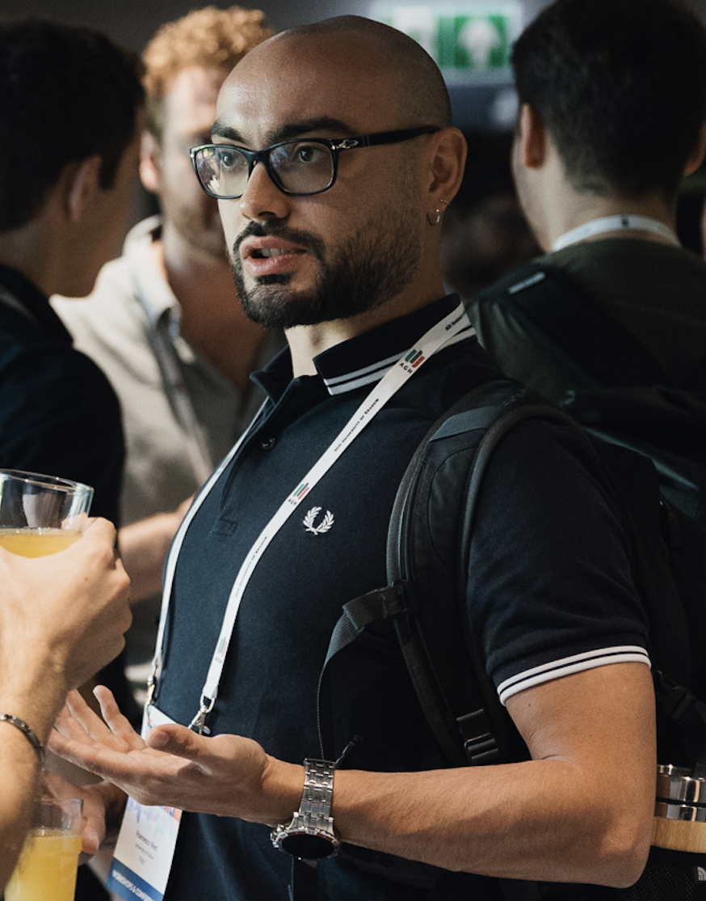

Name: Francesco Vinci
Profile: Research Fellow
Email: francesco.vinci@unipd.it
Address: Room 2CD8, Department of Mathematics “Tullio Levi-Civita” - Unipd
Skills
I'm Francesco, an AI and process science researcher at the University of Padua. My work bridges process mining, machine learning, and explainable AI to enable transparent what-if and prescriptive analytics in real-world settings. I focus on data-driven process simulation models for operational decision-making, with applications in healthcare and industry, and develop open-source tools to translate research into practice.
Postdoctoral Research Fellow (“Assegnista di Ricerca”).
Database Teaching Assistant in Computer Science Bachelor’s degree.
Conducted research on process mining and process simulations.
Visiting Researcher at the Process and Data Science (PADS) Research Group in Aachen (Germany).
Visiting Researcher at Fraunhofer FIT, in Aachen (Germany).
Developed a framework combining supervised and unsupervised ML for video anomaly detection in steel continuous casting.
Library assistant and ILL (Interlibrary Loan) office assistant at the Library of Statistical Sciences "Bernardo Colombo" of the University of Padova.
Curriculum: Computer Science for Societal Challenges and Innovation
Research project: Data-driven Optimization of Processes in Public Administrations: When Human Perception meets Objectivity
Supervisor: prof. Massimiliano de Leoni
More details.
Thesis: "Semi-supervised Deep Learning methods for Video Anomaly Detection applied to sticking identification during steelmaking continuous casting process"
Supervisor: Prof. Michele Rossi
Cosupervisor: Andrea Zamolo
Thesis: "Enlargement of filtrations in discrete time and applications to finance"
Supervisor: Prof. Claudio Fontana
Finalist.
"Premio Promotori" winner.
Open-source web application for data-driven business process simulation, built with Python, Flask, and Docker. ProSiT ingests XES event logs and automatically discovers simulation parameters (control flow, resource assignments, timing distributions, trace attributes) using explainable ML models including probabilistic decision trees and statistical distributions.
Supports interactive what-if scenario configuration, discrete-event simulation, and accuracy evaluation against real event data. Delivers visual analytics including process maps, cycle time distributions, and resource utilization heatmaps.